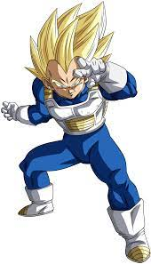
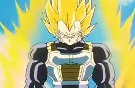
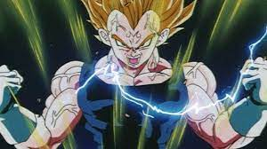

Vegeta Base Form

Vegeta's Great Ape Form

This is was introdueced when Vegeta arrived to fight the Androids. It was a powerful
moment for him as his life long goal was to become a super saiyan.
Vegeta's Super Saiyan Form

Vegeta's ascended form. His ego was also Ascended.
Super Vegeta

This was when Vegeta allowed himself to be controlled by Babadis Majic.
Vegeta's goal was to fight Goku before he returned to Other World.